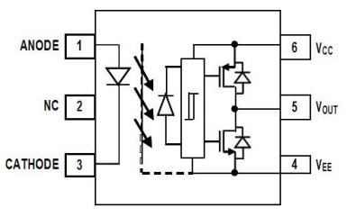
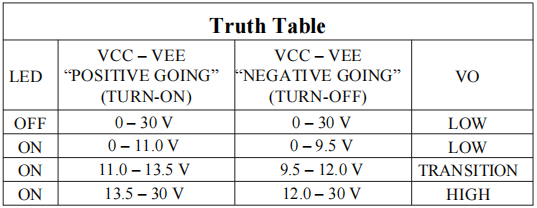

Electrical isolation
Helps protect low-voltage control circuits from high-voltage switching-side interference and damage.
Orient product line focus
A focused Orient portfolio for isolated IGBT and MOSFET gate drive designs, covering 1A to 4A peak output current and multiple package options for industrial, renewable energy, charging, UPS, and automotive systems.
Technical overview
Gate drive optocouplers combine an input LED with an integrated power output stage to provide electrical isolation while driving the gate of IGBT and MOSFET devices. Their higher output voltage and current capability help meet the demanding drive requirements of modern power modules.


Key advantages
Helps protect low-voltage control circuits from high-voltage switching-side interference and damage.
Output voltage close to VCC and GND supports lower switching loss in optocoupler-driven IGBT and MOSFET circuits.
Undervoltage lockout turns off output when supply voltage is insufficient, helping avoid unsafe linear-region operation.
High peak output current supports direct drive of demanding power modules, including 1200V / 100A-class IGBT applications.
CMTI performance up to 35-50 kV/us helps resist switching dV/dt noise and reduce false triggering.
Product matrix
Orient's gate drive optocoupler line covers standard cost-effective drivers and intelligent drivers with additional protection functions such as DESAT detection, soft shutdown, active Miller clamp, and fault feedback.
| Peak Current | DIP8 / SMD8 | SO6W1 / SO6W | SOP5 | LSOP8 | SO16 |
|---|---|---|---|---|---|
| 1A | OR-340 | OR-155E | |||
| 1.5A | OR-3150 | OR-314 | OR-330J OR-331J |
||
| 2.5A | OR-152 | OR-H313 | OR-332J OR-333J |
||
| 3A | OR-3120 OR-250H |
OR-341 | OR-M341 | ||
| 4A | OR-343 |
SOP5 for compact PCB designs where board area is limited.
DIP8 / SMD8 and SO6W1 / SO6W for high withstand voltage and creepage needs.
LSOP8 and SO16 for higher electrical safety requirements and wider spacing.
Applications
Controls IGBT or MOSFET power switches for efficient and precise motor speed control.
Supports DC-to-AC conversion stages by driving IGBT power switching devices.
Used in bus switching, vehicle air-conditioning control, and compact DC / AC power stages.
Provides isolated drive control in rectifier and inverter sections of high-power UPS systems.
Mainwin Technology
Share your target current, package, insulation requirement, application, and replacement model. Mainwin will help confirm the suitable Orient option for overseas supply.